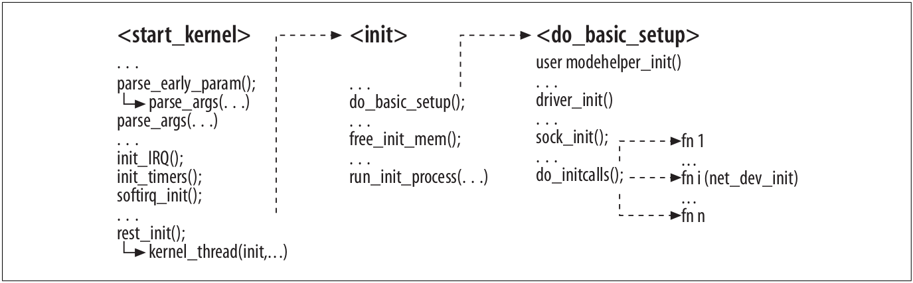

网络设备初始化
Table of Contents
现代操作系统的灵活性引入了初始化的复杂性．首先，设备驱动既可以作为模块加载也可以作为内核的静态的一部分．其次，设备可以在启动时候存在或者是运行时插入，运行时插入的叫做热插拔设备，包括USB，PCI卡等．本文后面会介绍热插拔是如何影响发生在内核和用户空间的事情的．
本文主要会涉及到以下几点：
- 核心网络代码的初始化．
- NIC的初始化．
- NIC如何使用中断，以及IRQ句柄如何被分配和释放，驱动如何共享IRQ也会被介绍到．
- 用户如何提供配置参数给设备驱动．
- 设备初始化的时候在用户空间和内核之间如何交互．我们会看到内核空间如何运行一个辅助函数可以用来加载正确的设备驱动或者给NIC应用用户空间的配置．尤其是，我们将会看到热插拔功能．
- 虚拟设备在配置方面和用户交互时和真实的设备有何不同．
1 系统初始化概要
下面的图展示了内核一些子系统在启动时的调用序列：

Figure 1: 内核初始化
当内核启动时，会执行start_kernel，这个函数会初始化许多的子系统，如上图所示．在start_kernel结束前，会调用init内核线程，这个线程会负责其余的初始化工作．本文大部分的初始化活动都是在函数do_basic_setup中做的．
在各种初始化任务中，主要感兴趣三种：
启动时选项：有两个函数主要用来解析启动加载器(LILO或者GRUB)传过来的配置参数．后面还会看到这两个函数的细节．
中断与定时器：通过init_IRQ和softirq_init可以初始化硬件和软件中断．中断的细节后面还会介绍，在本文只关心设备驱动怎样注册一个句柄关联到一个IRQ以及IRQ是如何在内存里组织的．定时器也会在启动的早期被初始化，所以后面的任务可以使用它们．
初始化函数：内核子系统以及内嵌的设备驱动通过调用do_initcalls完成初始化．
run_init_process决定运行哪个是系统中的第一个进程，其PID是1并且直到系统关机绝不会暂停．通常这个程序就是init．然而系统管理员通过init=是可以指定一个不同的程序的．如果没有指定的话，内核会去一些固定的目录寻找，没找到的话就报panic了．
2 设备注册与初始化
网络设备要想能使用，就必须被内核识别并且关联到正确的驱动．驱动在私有数据结构里存放了所有供设备工作以及与其它内核部件交互的信息．注册和初始化的任务，一部分由核心内核负责另一部分由设置驱动负责:
硬件初始化：由设备驱动和通用总线(比如PCI或USB)层完成．设备驱动有时自己有时需要用户提供的参数来配置一些特点，比如每个设备的IRQ或I/O地址，通过这个可以和内核进行交互．因为这些活动是靠近设备驱动而不是高层的协议层，将不会阐述过多．
软件初始化：在设备能够使用之前，取决于配置了什么网络协议，用户或许会提供其它的配置参数，比如IP地址．
特征初始化：Linux内核提供了许多网络选项．它们中的一些每个设备的配置都不一样，设备初始化时需要留心．一个例子就是流量控制，这个子系统实现了QoS，它可以决定数据包是如何在出包队列上入队和出队．
前面有文章介绍到net_device里有一些函数指针内核可以使用它们和设备驱动以及内核一些特征交互．这些设备的初始化一部分是依据设备的类型，再有一部分就是设备是如何制作的以及它的模型．由于以太网的流行，本文主要专注以太卡设备的初始化(但是其它设备是极其类似的)．
3 NIC初始化的目标
Linux内核的网络设备都由net_device结构体表示，后面还有文章会描述这个数据结构是怎么分配的以 及其中的成员是怎么初始化的，一部分是由设备驱动，而另一部分是核心内核代码做的．在本文主要关 注设备驱动是如何分配资源从而建立设备/内核之间的交流，比如：
IRQ